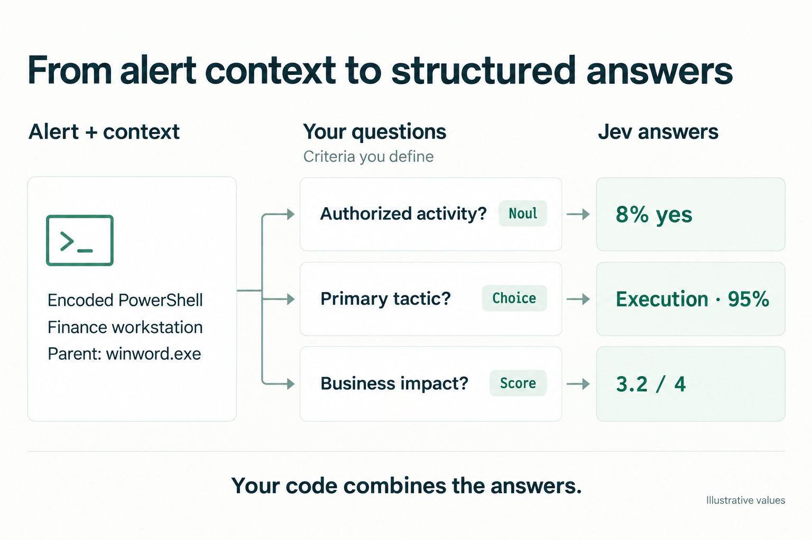

I'm glad TypeSafe released Jev. It puts attention on a problem I keep coming back to in security: how do we turn model judgments into decisions that software can reliably act on?
That also exposes the tradeoff. Someone still has to define what matters, gather the right context, and maintain those definitions as the environment changes. Jev makes that work more visible.
What is Jev?
TypeSafe presents Jev as a model built for fast, structured judgments. You supply the state and the questions; it returns values and probabilities your code can use. Its API exposes three primitives:
- Choice: select from options you define, with a probability distribution over them.
- Score: evaluate against a rubric, returning a score and a distribution over its levels.
- Noul: estimate the probability that a statement is true.
Questions in the same request are evaluated separately against shared input. Your code combines their answers into a workflow. For me, that division of responsibility is the appeal: the model supplies judgments, while the application owns how those judgments become actions.
The launch post credits Jev's efficiency to a new model design, a parallel sampler, and a new training method. TechCrunch describes Jev as transformer-based, but reports that CEO Diogo Almeida is "tight-lipped" about its architecture. TypeSafe has not published the model's size. The reported cost and latency gains are promising, but their value depends on the workload.
The launch post also says Jev "can't hallucinate." I read that claim narrowly. Defining the possible answers in advance rules out malformed output, but it does not make the chosen answer true. A perfectly valid decision to close an alert can still be wrong.
Calibration is the interesting training objective
TypeSafe calls its training method Reinforcement Learning for Calibrated Decisions (RLCD). The emphasis on useful probabilities resonates with me. A response that sounds convincing is a weak foundation for automation if the system cannot tell when it is likely to be wrong.
The underlying problem predates Jev though. The 2023 GPT-4 technical report showed that post-training degraded calibration on a subset of the MMLU multiple-choice benchmark. That is evidence of a real tradeoff in that setting, rather than proof that every preference-trained model must be overconfident. I do believe we have come so far since GPT-4 to fix this to some extent.
There is also relevant prior work on explicitly rewarding calibration. Rewarding Doubt (ICLR 2026), which uses a logarithmic scoring rule to train models to express calibrated confidence. Beyond Binary Rewards (July 2025), which introduces Reinforcement Learning with Calibration Rewards (RLCR), combining correctness rewards with a Brier-score component. These are relevant precedents, though the public material is not enough to establish how closely RLCD matches either method.
For Jev, probabilities are central to the interface. But calibration is a property measured across predictions: among comparable cases assigned an 80% probability, the outcome should occur about 80% of the time. It is not a guarantee about one alert.
The hard work is in the context and criteria
Security makes this concrete. Activity that looks suspicious on a developer's laptop may be expected on a patch-management server. The command alone rarely settles the question. The asset's role, the account, the process ancestry, and the approved change can all change the interpretation.
The input therefore needs the relevant context. That does not mean dumping every available log into one request. Jev's documented limits are 64k tokens per request, with a separate 32k limit for the state plus the longest question. TypeSafe also documents reduced accuracy when irrelevant detail accumulates - usually a behaviour we see in smaller models, though Typesafe says JEV is not a small model. Retrieval, enrichment, and filtering remain part of the system you have to build.

The output definition is where domain expertise becomes unavoidable. The illustration shows the interface, but for a production workflow I would break broad judgments such as whether to isolate a host into narrower questions:
- Does the observed activity match the work described in the approved change?
- Is the account authorized to perform this operation on this asset?
- Does the process behavior indicate credential access?
- Is there evidence that the suspicious activity is still running?
Then code can combine the answers with asset criticality, response policy, and escalation thresholds. Exact checks, such as whether a timestamp falls inside an approved maintenance window, belong in code. Missing evidence also needs an explicit path: no record of authorization is not necessarily proof of unauthorized activity.
This aligns with my thinking about making LLMs useful in security workflows. A single true-positive or false-positive verdict hides many judgments. Narrower questions make those judgments easier to inspect and test. They still require careful wording: TypeSafe's limitations page describes sensitivity to literal phrasing, contradictory criteria, and adversarial content. Typed outputs do not remove those problems.
What the evaluations tell us
TypeSafe's benchmark philosophy rejects standard benchmark tables in model releases, but the company does publish workflow evaluations. The stated methodology gives models a shared workflow and compares their answers against reference probabilities formed by averaging GPT-6 Astra and Claude Fable 5.1 outputs at high thinking settings. The other models use their providers' default reasoning settings, and the evaluation assumes the workflow code is correct.
That is useful evidence about performance within a defined workflow. It measures agreement with a model-based reference, however, which is different from independently established incident ground truth. Both the reference models and the workflow can be wrong.
The security-incidents example is especially relevant for cybersecurity community. It decomposes an investigation into questions about authorization, supporting records, evidence, and incident state, then uses code to select a response. I like that structure. It reflects how much the final action depends on several narrower judgments.
Before treating the results as evidence for production alert triage, I would want to understand the dataset's size and provenance, how well it covers rare and ambiguous cases, and how the comparison changes with different prompting and reasoning budgets. I would also want independently adjudicated outcomes, calibration measurements, and error rates for specific actions. Incorrectly closing an incident and unnecessarily isolating a production server have very different costs; average accuracy hides that distinction.
In the FAQ at the end of its launch post, TypeSafe describes itself as "primarily a data research lab" and says it makes all of its own training data. My suspicion is that data quality and task coverage will be a large part of Jev's practical value. A training objective alone cannot establish whether the model understands the long tail of enterprise security. That is something I would want to test on real environments.
I keep coming back to hybrid systems
We have become too comfortable delegating broad decisions to LLMs because the demos work. The difficulty often appears later, in the long tail of customer environments. An exception arrives, we add a paragraph to the prompt, and the next model upgrade makes us revisit the accumulated instructions. In security, that is an expensive way to discover what the system actually learned.
Business automation needs reliability, predictability, and auditability. Explicit criteria and deterministic workflow code help, but the learned judgments inside that workflow still need evaluation. Jev makes the boundaries more visible; it does not eliminate the uncertainty within them.
This connects to my work on SecEncoder, a DeBERTa-style model trained mainly on security logs, and TIPS, which combines SecEncoder with GPT-4 to prioritize applications using threat-actor information. TIPS uses targeted questions about application behavior as part of that process. Those projects shaped my interest in combining efficient representation models with more flexible language-model judgments.
I think of this as a System 1/System 2 design pattern: use fast models for focused, repeatable work, and bring in more deliberative reasoning when the case requires it. The analogy describes complementary roles in a system, rather than a shared model architecture.
Stronger reasoning models may eventually handle more of the ambiguity with less instruction. Whether they can do so at the cost and latency needed for high-volume security work remains an open question. Distillation can improve those economics, but capability loss is task-dependent.
Who maintains the questions and criteria?
My biggest concern is the cost of keeping the questions and criteria correct. Environments change. New administrative tools appear. An exception that made sense last quarter can become dangerous today. Someone has to decide which questions to ask, what evidence they require, and when the answers justify an action.
Other LLMs could help sustain that feedback loop: examine failures, propose narrower questions, draft criteria, and generate regression cases. I would treat those as proposed changes to a decision system, with review and evaluation before they alter production behavior. Otherwise, we have simply moved the same ambiguity into the mechanism that writes the criteria.
That is what I find encouraging about Jev. It gives us a concrete way to put model judgments inside software with explicit responsibilities. The test will be whether those judgments remain useful as the environment changes, and whether maintaining the surrounding system costs less than the automation saves.